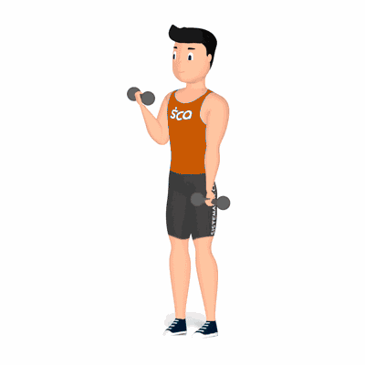

Rosca Alternada

Exercício para fortalecimento e hipertrofia dos bíceps, com enfoque aos músculos bíceps braquiais.
Ficha Técnica
Tipo: Musculação
Grupo Muscular: Bíceps
Aparelho: Nenhum
Músculos: Nenhum
Como realizar
- Utilize dois dumbbells ou halteres;
- Posição em pé, cabeça e costas alinhadas;
- Joelhos semiflexionados, pés ligeiramente afastados para obter uma base estável na execução do exercício;
- Braços estendidos e, com os antebraços posicionados em supinação, realize a flexão unilateral do cotovelo levando o punho em direção ao ombro;
- Retorne à posição inicial de forma controlada;
- Realize novamente com o membro contralateral, alterne conforme o número de repetições orientado pelo professor(a).
 RC STORE
RC STORE